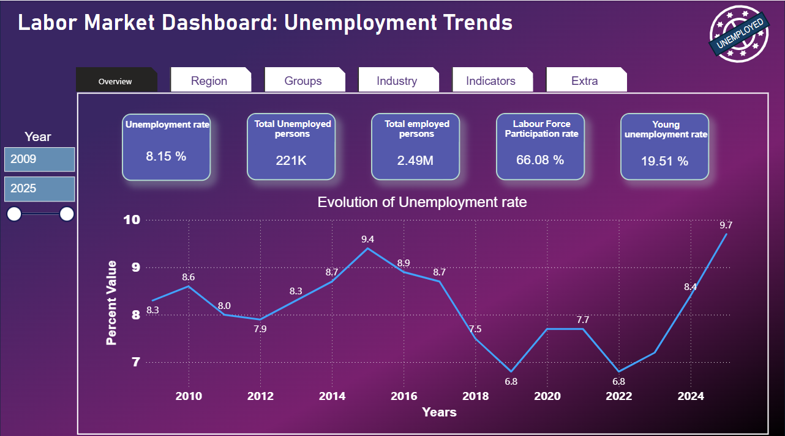

This project focuses on analyzing historical unemployment data in Finland to identify key trends and patterns. It explores the potential of machine learning techniques to predict unemployment behavior and presents the findings through a clear and interactive dashboard.
Project Files:
Python projects focused on clustering, data visualization, and machine learning using KMeans and TensorFlow.
Project Files:
A collection of presentations covering various topics in data analysis, technology, and project work.
Project Files: